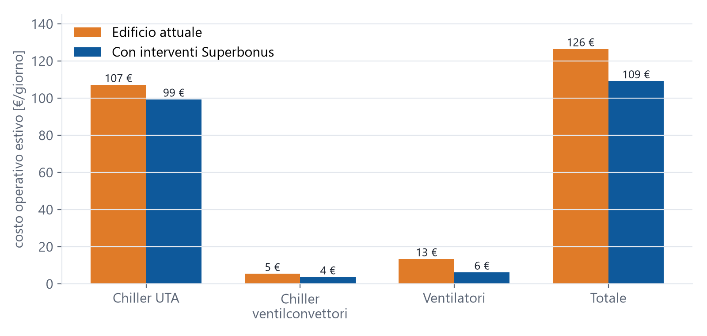

L'edificio e l'impianto
L'edificio ha due zone con esigenze diverse. I laboratori sono climatizzati da un'unità di trattamento aria (UTA) che immette aria trattata attraverso condotte; gli uffici hanno un ventilconvettore per stanza, alimentato da una rete ad acqua. Per il raffrescamento estivo abbiamo previsto due cicli frigoriferi separati, perché i due sistemi lavorano a temperature molto diverse: l'aria dell'UTA va portata da 24 °C a circa 4 °C, l'acqua dei ventilconvettori da 12 °C a 7 °C.
Carichi termici e UTA
Dal rilievo geometrico abbiamo calcolato i carichi per trasmissione attraverso pareti, tetto e finestre, per ventilazione e per irraggiamento solare sulle superfici vetrate, separando laboratori e uffici. Il carico complessivo vale circa 283 kW in estate e 145 kW in inverno.
Su questi valori abbiamo dimensionato le batterie dell'UTA, cioè preriscaldamento, umidificazione, raffreddamento e post-riscaldamento, tracciando le trasformazioni dell'aria umida sul diagramma psicrometrico nei due casi stagionali.
Cicli frigoriferi
Entrambi i cicli sono a compressione di vapore monostadio con R134a e condensazione alla temperatura esterna di 30,5 °C. Per il ciclo che alimenta l'UTA, con rendimento isoentropico del compressore di 0,8, abbiamo ottenuto un COP di circa 3,7 e un rapporto di compressione di 4,2. I cicli sono stati tracciati e verificati con CoolPack.

Reti di distribuzione
Per gli uffici abbiamo scelto i ventilconvettori da catalogo e dimensionato la rete dell'acqua: portate per ogni ufficio, diametri delle tubazioni e perdite di carico distribuite e concentrate sul percorso più sfavorito, fino alla scelta dell'elettropompa. Per i laboratori abbiamo dimensionato le condotte rettangolari dell'aria sulla portata invernale, la più alta, limitando a 8 m/s la velocità alle bocchette per contenere il rumore.


Analisi energetica e Superbonus
Con la curva di carico giornaliera tipica di un'utenza commerciale abbiamo stimato consumi e costi operativi estivi di chiller e ventilatori. Poi abbiamo simulato gli interventi del Superbonus 110%: con il cappotto termico la trasmittanza delle pareti passa da 1,41 a 0,21 W/m²K, i carichi per trasmissione si dimezzano circa e calano le portate d'aria e d'acqua necessarie. Il costo operativo giornaliero scende da circa 126 a 109 €. Il COP invece resta quasi invariato, perché carico termico e potenza del compressore diminuiscono insieme.

Analisi exergetica
Il bilancio exergetico, sul sistema complessivo e componente per componente, individua dove si perde più qualità energetica. Nei cicli frigoriferi le irreversibilità si concentrano in compressore, condensatore e valvola di laminazione, e il rendimento exergetico complessivo è intorno al 26–28%. Nell'UTA, con rendimento complessivo del 33%, quasi metà delle irreversibilità è nella batteria di raffreddamento e un'altra parte rilevante nel ventilatore: sono i componenti su cui intervenire per primi.

Scambiatore di calore dei ventilconvettori
Infine abbiamo dimensionato con il metodo ε-NTU la batteria alettata in rame a flussi incrociati del ventilconvettore, nella condizione invernale, la più gravosa. Abbiamo calcolato i coefficienti convettivi lato aria e lato acqua dai fattori di Colburn, poi l'efficienza delle alette e il coefficiente globale di scambio, circa 480 W/m²K. Ne risulta una superficie di scambio di 0,33 m² e una batteria a otto ranghi lunga 0,81 m e alta 0,30 m.
Cosa ho imparato
Questo progetto mi ha mostrato il percorso completo di un impianto termotecnico, in cui ogni scelta dipende dalla precedente: dai carichi alle portate, dalle portate ai componenti, dai componenti ai costi. L'analisi exergetica in particolare mi ha insegnato a guardare oltre il bilancio energetico per capire dove un impianto spreca davvero, e il confronto con il Superbonus a valutare un intervento anche dal punto di vista economico.